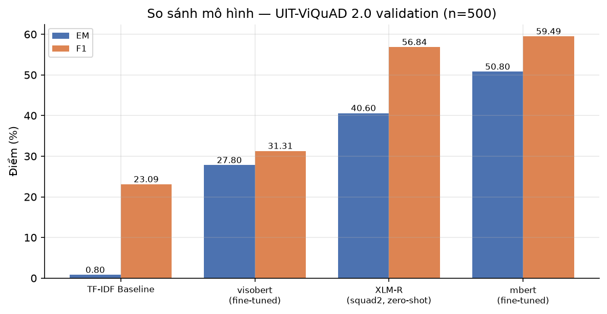
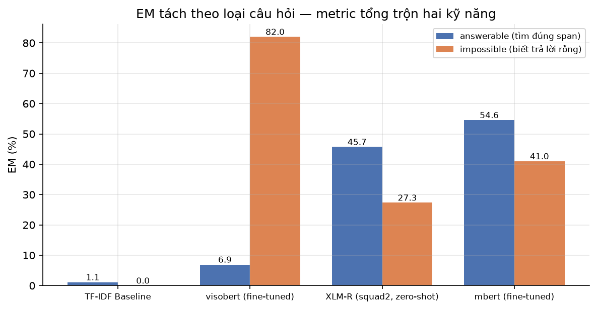
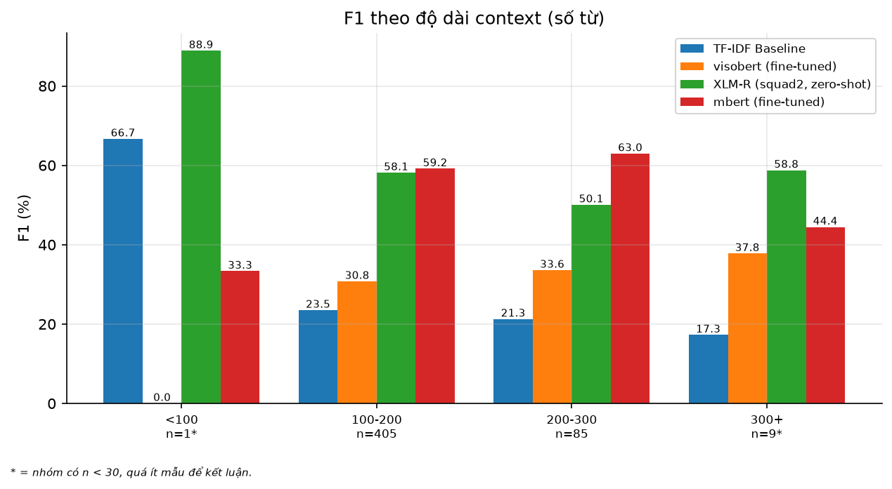
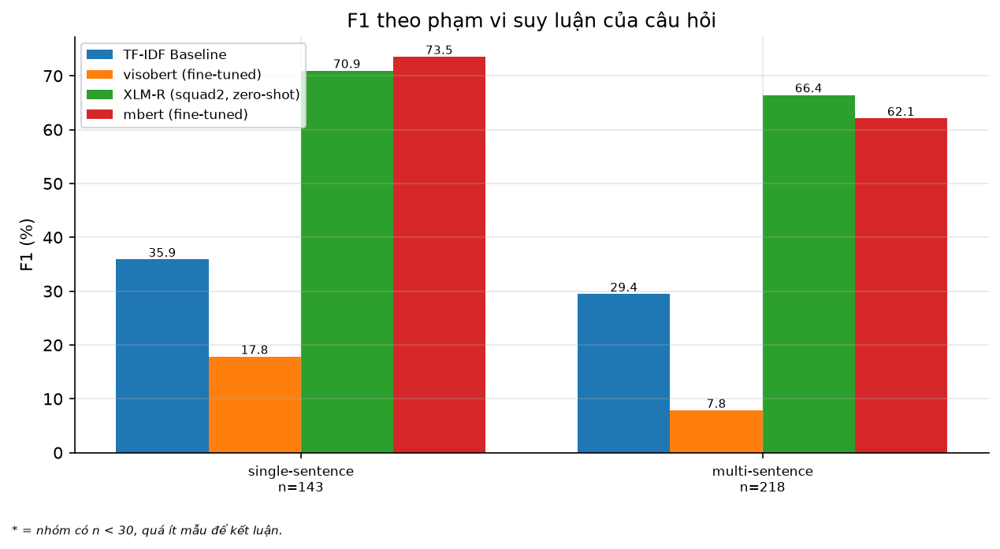
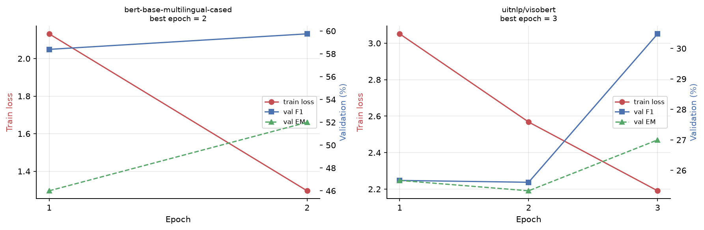

Vietnamese Extractive Machine Reading Comprehension
trên UIT-ViQuAD 2.0
Nguyễn Quang Lâm · 25210289
Trần Trọng Tấn · 25210334
Lê Quang Thi · 25210337
Vỏ Cẩm Thu · 25210342
Cho đoạn văn + câu hỏi, trả về một đoạn con của chính đoạn văn đó.
Model không sinh chữ mới. Nó chỉ ra vị trí.
Vì đáp án luôn nằm trong context, ta có một bất biến kiểm được bằng máy — và nó được test cho mọi model.
Toàn bộ câu trong split test: gold rỗng, đồng thời
is_impossible = False.
Hai điều đó mâu thuẫn nhau ⇒ đáp án đã bị lược bỏ cho leaderboard.
Chạy nhầm trên test sẽ báo EM 100%: model trả rỗng, gold rỗng, khớp hoàn toàn.
assert_gradeable ném lỗi
thay vì để điều đó xảy ra.
| Hệ thống | Loại | Trả lời câu hỏi |
|---|---|---|
| TF-IDF Baseline | Cosine | Sàn ở đâu? |
| mBERT + QA | Fine-tune | Mốc chuẩn ở đâu? |
| ViSoBERT + QA | Fine-tune | Chuyên biệt hoá tiếng Việt có giúp không? |
| XLM-R squad2 | Zero-shot | Chuyển giao xuyên ngữ đi được bao xa? |
Giả thuyết ghi trước khi chạy và commit vào git: ViSoBERT sẽ thắng.

results/*.json — không con số nào gõ tayBaseline trả về cả một câu.
Gold là một cụm vài từ.
Overlap token thì có. Trùng khít thì không bao giờ.
EM và F1 đo hai thứ khác nhau — và khoảng cách ấy cho thấy điều đó bằng hình ảnh.

Trên câu có đáp án, XLM-R zero-shot thực ra tốt hơn.
mBERT thắng tổng thể vì nó biết khi nào không nên trả lời.
Fine-tune không dạy mBERT đọc hiểu giỏi hơn.
Nó dạy mBERT im lặng đúng lúc.
Model tiếng Việt chuyên biệt xếp dưới cả XLM-R zero-shot.
Nó có impossible cao nhất, answerable thấp nhất ⇒ học được cách trả rỗng, không học được cách tìm span.
Vocab ~15 nghìn token, pretrain trên mạng xã hội. MRC Wikipedia đòi hỏi nhận diện tên riêng.
Pretrain đúng ngôn ngữ là điều kiện cần, không phải điều kiện đủ. Miền văn bản quan trọng ngang ngôn ngữ.
Một giả thuyết sai có giải thích đáng giá hơn một giả thuyết đúng không kiểm chứng.
Kéo ngưỡng +0,0 → +1,5
Model chuyển từ trả lời sang từ chối trên cùng một đoạn văn.
null_delta = null_score − best_span_score
Demo hiển thị biên độ chứ không chỉ hiển thị đáp án — vì quyết định mới là thứ đáng xem.


* = nhóm có n < 30, harness
tự gắn cờ. Không phụ thuộc người viết có nhớ hay không.

ViSoBERT hai epoch đầu: val_EM == val_F1
⇒ trả rỗng gần như mọi câu. Epoch 3 mới thoát ra.
| # | Bất biến | Cách bắt buộc |
|---|---|---|
| 1 | Đáp án là chuỗi con của context | Test cho mọi predictor |
| 2 | Không leakage giữa các split | assert_no_leakage làm fail run |
| 3 | Mỗi số ⟶ file ⟶ commit hash | Phụ lục xuất xứ, sinh tự động |
| 4 | Có n kèm mọi số | n < 30 tự gắn cờ |
Bản v1 của đề tài này chết vì báo cáo số liệu chưa từng được sinh ra. Đó là lỗi kiến trúc, không phải lỗi cẩu thả.
./run.sh → demo tại localhost:8501
./run.sh test → toàn bộ bộ test
Chỉ cần Docker. Không Python, không mạng, không dựng lại ảnh.
Demo và báo cáo đọc cùng những file
results/*.json — không có đường nào để lệch số.
question_type là heuristic tự gán, không phải nhãn của ViQuAD.Cảm ơn thầy và các bạn — mời đặt câu hỏi.